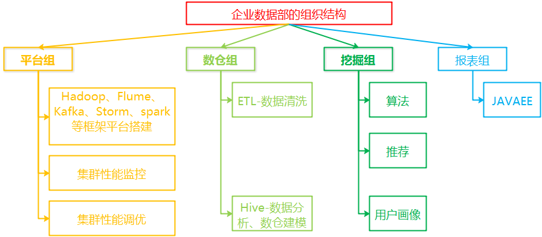

sql题
select
t1.date,
t1.qq,
t1.msg,
t1.活跃度,
t2.region
from (
select
date,
qq,msg,
case when msg>200 then ‘高活跃’ when msg <200 and msg >0 then ‘低活跃’ else ‘未知’ end as ‘活跃度’
from table_act
where DATE_FORMAT(date,’%Y%m’) = ‘201701’) t1 , (
select
date,
qq,
region
from table_user
where
gender = ‘女’ and
age >= 18 and
region = ‘广东省’
) t2
where t1.qq = t2.qq
and t1.date = t2.date;
– where timestimpdiff(day,date,’201701’)=0
hive数据倾斜如何处理？
1.增加reduce的JVM内存
适用于单值有大量记录的情况，但只记录超过reduce内存，无论怎么分区都不会有改变。
2.增加reduce的个数
唯一值比较多，单个为一值不超过reduce内存，可以增加reduce数量，可以缓解某些reduce分了较多记录的情况
3.customer partition
比如hadoop definitive guide里面的温度问题，一个固定的组合（测试站点的位置和温度）的分布是固定的，对于特定的查询如果前面两种方式都没有作用，自己实现partition也许可以解决问题。
4.其他优化讨论
重新定义Key
调参：
hive.map.aggr=true// 开启map端聚合功能
hive.groupby.skewindata=true// 开启两个MR job 第一个map的输出结果集会随机分配到reduce端，每个reduce做部分聚合
map side join // 直接在map端就完成表的join操作，进入map端的数据根据分片得到，数据比较均衡（小表小于25M）
通过以下方法来在map执行前合并小文件，减少map数：
set hive.input.format=org.apache.hadoop.hive.ql.io.CombineHiveInputFormat
5.reduce sort merge 排序算法
map reduce 一旦发生数据倾斜partition就失效了，对于join例子，某一个key分配了过多的数据。使用map-reduce-reduce方法，同一个key不需要分配到同一个reduce中，第一个reduce得到结果，第二个reduce进行汇总去重。
6.hive skewed join
大表中的join key能够分散，对于同样join key的小表中的
又能匹配到所有大表中的记录。
7.pipeline
在join的时候可以直接使用group操作符减少大量的磁盘IO，而不是等待join完成，然后写入磁盘，group又读取磁盘做group操作，
8.distinct
count(distinct x),
①可以把reduce个数调大
②可以把hive.exec.reducers.byte.per.reducer调小
③使用where子句先过滤掉一些数据
9.index,bitmap index
index即为物化视图，对于group by 和distinct 的情况等变成了map端在做计算自然不存在数据倾斜。
精简：
1.增加JVM内存 （单值多超JVM内存）
2.增加Reducer个数 （单值多不超JVM内存）
3.customer partition
比如hadoop definitive guide里面的温度问题，一个固定的组合（测试站点的位置和温度）
4.参数调优
hive.map.aggr=true// 开启map端聚合功能
hive.groupby.skewindata=true// 开启两个MR job 第一个map的输出结果集会随机分配到reduce端，每个reduce做部分聚合
map side join // 直接在map端就完成表的join操作，进入map端的数据根据分片得到，数据比较均衡（小表小于25M）
5.sql调优
1.使用物化视图，index,bitmap index
2.先使用where子句减少数据量
线程和进程的区别
根本区别：进程是操作系统资源分配的基本单位，而线程是任务调度和执行的基本单位。
开销方面：每个进程都有独立的代码和数据空间，程序之间切换开销大；线程可以看作轻量级的进程，同一类线程共享代码和数据空间，每个线程都有自己独立的运行栈和程序计数器（PC），线程之间切换开销小。
所处环境：在操作系统中能同时运行多个进程；而再同一个进程中可以有多个线程（通过CPU调度，每个时间片中只能一个线程执行）
内存分配方面：系统运行的时候会为每个进程分配不同的内存空间；而线程，除了CPU外，系统不会为线程分配内存（线程所使用的资源来自其所属进程资源），线程组之间只能共享资源。
包含关系：没有现成的进程可以看做是单线程，如果一个进程内有多个线程，则执行过程不是一条线的，而是多条线共同完成；线程是进程的一部分，所以线程也被称为轻权进程或者轻量级进程；
int表示多少范围
int有4个字节，每个字节八位二进制，即32位二进制，又因最高位位符号位0正，1负，所以-2^31 ~ 2^32-1次
（byte 1 short char 2 int float 4 double long 8）
认证授权outh2
密码模式（resource owner password credentials）(为遗留系统设计)(支持refresh token)
授权码模式（authorization code）(正宗方式)(支持refresh token)
简化模式（implicit）(为web浏览器应用设计)(不支持refresh token)
客户端模式（client credentials）(为后台api服务消费者设计)(不支持refresh token)
偏向锁，轻量锁，重量锁特点？死锁怎么产生？如何处理？
自旋：
自旋是指某线程需要获取锁，但该锁已经被其他线程占用时，该线程不会被挂起，而是在不断的消耗CPU的时间，不停的试图获取锁。
偏向锁
引入偏向锁是为了在无多线程竞争的情况下尽量减少不必要的轻量级锁执行路径，因为轻量级锁的获取及释放依赖多次CAS原子指令，而偏向锁只需要在置换ThreadID的时候依赖一次CAS原子指令。
当只有一个线程去竞争锁的时候，我们不需要阻塞，也不需要自旋，因为只有一个线程在竞争，我们只要去判断该偏向锁中的ThreadID是否为当前线程即可。如果是就执行同步代码，不是就尝试使用CAS修改ThreadID，修改成功执行同步代码，不成功就将偏向锁升级成轻量锁。
轻量锁
获取轻量锁的过程与偏向锁不同，竞争锁的线程首先需要拷贝对象头中的Mark Word到帧栈的锁记录中。拷贝成功后使用CAS操作尝试将对象的Mark Word更新为指向当前线程的指针。如果这个更新动作成功了，那么这个线程就拥有了该对象的锁。如果更新失败，那么意味着有多个线程在竞争。
当竞争线程尝试占用轻量级锁失败多次之后（使用自旋）轻量级锁就会膨胀为重量级锁，重量级线程指针指向竞争线程，竞争线程也会阻塞，等待轻量级线程释放锁后唤醒他。
重量锁
重量级锁的加锁、解锁过程和轻量级锁差不多，区别是：竞争失败后，线程阻塞，释放锁后，唤醒阻塞的线程，不使用自旋锁，不会那么消耗CPU，所以重量级锁适合用在同步块执行时间长的情况下。
死锁由于锁之间嵌套造成的,四个必要条件
1.互斥使用，一个资源被一个线程使用时，别的线程不能使用
2.不可抢占，资源请求者不能从资源占有者手中抢夺资源
3.请求和保持，当资源请求者再请求其他的资源的同时，保持对原有资源的占有。
4.循环等待，即存在一个等待队列，P1占有P2的资源，P2占有P1的资源
解决办法:
破坏‘请求和保持’：
1.所有进程在运行之前，必须一次性地申请在整个运行过程中所需的全部资源。
2.要求每个进程提出新的资源申请前，释放它所占有的资源。
破坏：‘不可抢占’
如果一个进程请求当前被另一个进程占有的一个资源，则操作系统可以抢占另一个进程，要求它释放资源。只有在任意两个进程的优先级都不相同的条件下，该方法才能预防死锁。
破坏“循环等待”条件：
将系统中的所有资源统一编号，进程可在任何时刻提出资源申请，但所有申请必须按照资源的编号顺序（升序）提出。这样做就能保证系统不出现死锁。
怎么查看集群性能？
w
22:02:07 up 10 min, 1 user, load average: 0.00, 0.07, 0.09
命令结果中load average 三个参数表示1 5 15 分钟系统的平均负载
cat /proc/cpuinfo prossor 0 表示cpu核数1与负载数对比判断是否过载；
top
按1，则可以展示出服务器有多少CPU，及每个CPU的使用情况
iostat -x 1 10
1表示时间 10表示次数 rsec/s表示读入，wsec/s表示每秒写入 util表示IO使用率
行存储和列存储的区别？
1）行存储的写入是一次性完成，消耗的时间比列存储少，并且能够保证数据的完整性，缺点是数据读取过程中会产生冗余数据，如果只有少量数据，此影响可以忽略;数量大可能会影响到数据的处理效率。
2）列存储在写入效率、保证数据完整性上都不如行存储，它的优势是在读取过程，不会产生冗余数据，这对数据完整性要求不高的大数据处理领域，比如互联网，犹为重要。
HBase工作原理？有哪些节点？
HBase Table 组成：Table = RowKey + Family + Column + Timestamp + value
HBase中的一个Table按照行键分割为多个Hregion
每个Region中按列族划分为多个Hstore
每个Hstore中有一个memStore和多个HFile
hive文件的存储格式有哪些？
①textfile:默认格式，导入数据时会直接把数据文件拷贝到hdfs上，不进行处理。
②sequencefile:一种Hadoop API提供的二进制文件，使用方便、可分割，可压缩（压缩格式NONE，RECODE,BLOCK(常用)）等特点。
配置方法：
SET hive.exec.compress.output=true
SET io.seqfile.compresstion.type=BLOCK
create table test2(str String) stored as sequenencefile;
③RCFile结合行存储查询速度快，和列存储节约空间的特点设计
Description:先按行划分为多个RowGroup（默认4M），然后垂直划分列式存储（横向列式存储）；
按列使用Gzip压缩，查询的时候按列维度进行解压（lazy解压机制，符合条件列的列才会被解压）
1）同一行的数据位于同一节点，因此元组重构的开销很低。
2）块内列存储，可以进行列维度的数据压缩，跳过不必要的行读取。
实际过程：在map阶段从远端拷贝任然是整个数据块到本地目录，通过扫描每一个row group的头部定义来实现。
④ORCFile：hive给出的新格式，属于RCFile的升级版
⑴每个Task只输出单个文件，可以减少NameNode的负载；
⑵数据格式：支持datetime.decimal,以及一些复杂类型(struct,list,map，union类型)；
Date
⑶文件中存储了一些轻量级的索引数据
⑷用多个互相独立的RecordReaders并行的读取相同的文件；
⑸支持行级别的更新和删除，实现事务表机制。
⑹针对不同的数据类型，采用不用的压缩算法进行优化。数值类型（游程编码），字符类型（字典编码）
⑤Parquet File:
etl相关工具
ETL 工具
①datestage
②informatica
③kettle
④ODI
⑤cognos
⑥beeload
调度工具
①Control-M
②taskctl
③ets
④moia
hive 拉链表
定义：记录一个事物从开始，一直到当前的状态的所有变化信息。
区分流水表：在流水表中会存放一个用户的每条记录，但是在拉链表中只有一条记录
拉链表增量操作sql:
INSERT OVERWRITE TABLE dws.user_his
SELECT * FROM
(
SELECT A.user_num,
A.mobile,
A.reg_date,
A.t_start_time,
CASE
WHEN A.t_end_time = ‘9999-12-31’ AND B.user_num IS NOT NULL THEN ‘2017-01-01’
ELSE A.t_end_time
END AS t_end_time
FROM dws.user_his AS A
LEFT JOIN ods.user_update AS B
ON A.user_num = B.user_num
UNION
SELECT C.user_num,
C.mobile,
C.reg_date,
‘2017-01-02’ AS t_start_time,
‘9999-12-31’ AS t_end_time
FROM ods.user_update AS C
) AS T;
hive 数据清洗常用函数？
①case when condition_clause then field end as ‘field’ // if(sc.score>=60,1,null)
②regexp_replace(field,’/t’,’’)
③split(filed,’/t’)
④concat(‘1’,’2’)
⑤trim
⑥nvl(field,0) // ifnull(filed,0)
select name,count(bb.order_by_brand) from (select name,row_number() over (partition by name order by id desc) as order_by_brand from b)bb group by name;
数据库分层
ODS Operational Data Store(原始数据)
DWD Data Warehouse Detail(数据明细层) 去除空值，脏数据，拥有详细的明细数据
DWS Data Warehouse Service(服务数据层) 轻度聚合：结合业务粒度
ADS Application Data Store(实时个性化维度汇总层) 做分析处理同步到RDS数据库
DIM(维度层)
shell 脚本日期处理
表示当前日期的前一天
date -d “-1 day” +%F
2020-04-05
sql调优
避免全表扫描
1.给常用的条件列建索引
2.不要使用Null值判断，!= 、<>
3.where子句中 使用or来连接条件，条件字段有索引
（优化改用Union all）
4.慎用in、not in
5.使用exists 代替in
6.避免在字段中使用操作符
7.使用复合索引时，尽量让字段顺序与索引顺序一致
8.对于数据量大的表，先分页再join
9.索引提高了读性能，同时降低了写的性能，每次都要重建索引
10.使用char代替varchar
精简：
1.增加JVM内存 （单值多超JVM内存）
2.增加Reducer个数/减小每个reduce处理的数据量 （单值多不超JVM内存）
3.customer partition
比如hadoop definitive guide里面的温度问题，一个固定的组合（测试站点的位置和温度）
4.参数调优
hive.map.aggr=true// 开启map端聚合功能
hive.groupby.skewindata=true// 开启两个MR job 第一个map的输出结果集会随机分配到reduce端，每个reduce做部分聚合，第二MR再根据group by key分布到reduce中完成最终的聚合；
map side join // 直接在map端就完成表的join操作，进入map端的数据根据分片得到，数据比较均衡（小表小于25M）
5.sql调优
1.使用物化视图，index,bitmap index
2.先使用where子句减少数据量
外部表和内部标的区别
1）创建时：创建内部表时，会将数据移动到数据仓库指定的路径；创建外部表时，不会对数据的位置进行改变。
2）删除表时：内部表元数据和数据被一起删除；而外部表只删除元数据，不删除数据
hql执行流程图

1.向客户端提交一条HQL语句
2.获取执行计划，通过Complier进行编译，知道要操作的表
3.获取元数据，去找到要操作表的信息
4.拿到信息
5.编译器提交HQL语句分析方案
6.执行HQL语句方案
执行器在执行方案时，会判断如果当前方案不涉及到MR组件，比如为表添加分区信息、比如字符串操作等，比如简单的查询操作等，此时就会直接和元数据库交互，然后去HDFS上去找具体数据。
如果方案需要转换成MR job，则会将job 提交给Hadoop的JobTracker。
7.MR执行完任务告知执行引擎，执行引擎与HDFS交互获取结果
8.将结果返回给客户端，并展示在UI界面
hive中group by 和 count(distinct)哪个好
group by更好
原因：group by在map端会使用combine进行聚合，而count(distinct)不会，造成reduce的压力比较大。
创建外部表 以表中的年龄字段创建分区表
create external table stu(id int,name string,gender string,age int) row format delimited fields terminated by ‘ ‘;
load data inpath ‘hdfs://hadoop01:9000/stu.txt’ into table stu;
[load data local inpath ‘/home/stu.txt’ into table stu;]
–表中已有分区字段
create external table stu(id int,name string,gender string,age int) row format delimited fields terminated by ‘ ‘;
load data local inpath ‘/home/stu.txt’ into table stu;
create table p_stu1(id int,name string,gender string) partitioned by(age int) row format delimited fields terminated by ‘ ‘;
insert into table p_stu1 partition(age) select id,name,gender,age from stu distribute by age;
– 表中无分区字段
create table stud1(id int,name string,gender string) partitioned by(age int) row format delimited fields terminated by ‘ ‘;
load data local inpath ‘/home/15/stu1.txt’ into table stud1 partition(age=15);
– 分桶表
create table tmp(id int,name string,gender string) clustered by(id) into 6 buckets row format delimited fields terminated by ‘ ‘;
load data local inpath ‘/home/15/stu1.txt’ into table tmp;
sort by 排序 distribute 分组 order by 全局排序
– 包含map类型的写法
create table infos(id int,info map<string,int>) row format delimited fields terminated by ‘ ‘ map keys terminated by ‘,’;
load data local inpath ‘/home/mapstu.txt’ into table infos;
– struct
create table struct(id int,s structname:string,age:int,gender:string) row format delimited fields terminated by ‘ ‘ collection items terminated by ‘,’;
– serde
提取前：192.168.120.23 – [30/Apr/2018:20:25:34 +0800] “GET /music.mp3 HTTP/1.1” 304 -
提取后：192.168.120.23 30/Apr/2018:20:25:34 +0800 GET /bg.css HTTP/1.1 304
create table log(ip string,time string,zone string,requesttype string,url string,protocol string,status int) row format serde ‘org.apache.hadoop.hive.serde2.RegexSerDe’ with serdeproperties(“input.regex”=”(.) -- \[(.) (.)\] "(.) (.) (.)" (.*) -“) stored as textfile;
load data local inpath ‘/home/serde.txt’ into table log;
create table log_orc(ip string,time string,zone string,requesttype string,url string,protocol string) partitioned by (status int) row format delimited fields terminated by ‘ ‘ stored as orc;
insert into log_orc partition(status) select * from log distribute by status;
– left semi join a表中的数据哪些在b中出现过
select * from product_t left semi join order_t on product_t.pid=order_t.pid;
a表里哪些数据在b表中出现过
– hql 实现wordcount
select tmp.word,count(1) as cnt from
(select explode(split(line,’ ‘)) as word from wordcount1)tmp
group by tmp.word
order by cnt desc;
留存率 每日活跃用户hql语句写法
– 留存率计算
select dim_date
,node_id
,total_cnt
,concat_ws(‘% | ‘, cast(round(dif_1cnt100/total_cnt, 2) as string), cast(dif_1cnt as string))
,concat_ws(‘% | ‘, cast(round(dif_2cnt100/total_cnt, 2) as string), cast(dif_2cnt as string))
,concat_ws(‘% | ‘, cast(round(dif_3cnt100/total_cnt, 2) as string), cast(dif_3cnt as string))
,concat_ws(‘% | ‘, cast(round(dif_4cnt100/total_cnt, 2) as string), cast(dif_4cnt as string))
from
(
select p1.state dim_date
,p1.node_id
,count(distinct p1.user_id) total_cnt
,count(distinct if(datediff(p3.state,p1.state) = 1, p1.user_id, null)) dif_1cnt
,count(distinct if(datediff(p3.state,p1.state) = 2, p1.user_id, null)) dif_2cnt
,count(distinct if(datediff(p3.state,p1.state) = 3, p1.user_id, null)) dif_3cnt
,count(distinct if(datediff(p3.state,p1.state) = 4, p1.user_id, null)) dif_4cnt
from
(
select
from_unixtime(unix_timestamp(cast(partition_date as string), ‘yyyyMMdd’), ‘yyyy-MM-dd’) state,
user_id，
node_id
from user_active_day
where partition_date between date1 and date2
and user_is_new = 1
group by 1,2,3 –如果不行用字段替换，group by去重优于distinct
)p1 –日新增用户名单(register_date,user_id)
left outer join
(
select
from_unixtime(unix_timestamp(cast(partition_date as string), ‘yyyyMMdd’), ‘yyyy-MM-dd’) state,
user_id,
node_id
from active_users
where partition_date between date1 and date2
group by 1,2,3
)p3 –期间活跃用户(active_date,user_id)
on (p3.user_id = p1.user_id and p3.node_id=p1.node_id)
group by 1,2
) p4;
1)sql中where 子句中 and or ()的执行顺序 2)left join情况下on 后面where和and区别
and or ()执行顺序
如下sql说出执行结果并解释原因：
select * from stu where sid=1 and sgender=’男’ or sname=’aaa’;
select * from stu where sid=1 and (sgender=’男’ or sname=’aaa’);
第一条查询出id为1并且性别为男或者者名字为aaa的学生信息;
第二条查询出id为1并且为男或者id为1并且名字为aaa的学生。
在left,right,full join中使用on条件进行关联时，and,where子条件会使查询的结果不同，使用and才会查询出left等表中所有数据，使用where时跟inner join一样只返回关联上的结果集。
增量 全量hql 以及行转置sql
手写sqoop倒数据脚本
bin/sqoop import –connect jdbc:mysql://hadoop01:3306/test –username root –password root –table tabx –target-dir ‘/sqoop/tabx’ –fields-terminated-by ‘|’ -m -1;
// 按id进行分区–split-by id
insert overwirte directory ‘/sqoop/tabx/s.txt’ select F1,F2,F3 from taby stored as textfile
bin/sqoop export –connect jdbc:mysql://hadoop01://3306/test –username root –password root –table taby –export-dir ‘/sqoop/tabx/s.txt’ –fields-terminated-by ‘ ‘ –columns F1,F2,F3 –update-key F4 –update-mode allowinsert
bin/sqoop export –connect jdbc:mysql://hadoop01:3306/test –username root –password root –table taby –export-dir ‘/sqoop/tabx/part-m-00000’ –fields-terminated-by ‘|’ -m -1
spark 常用操作 以及调优
val r1 = sc.textFile(“file:///home/1.txt”)
val r2 = sc.flatMap{.split(‘ ‘)}.map{(,1)}.reduceByKey{+}
1.将spark的序列化由Java原生序列化更换为kryo
2.配置临时文件目录，将每个目录路径挂载到不同的磁盘上
3.启动推测执行机制
4.生产环境，查看运行结果不要使用collect或者foreach，建议使用savaAsTextFile,存储后查看
5.特定场景下，使用MapPartitions代替Map
sql进行行列转换
– 行转列
select name,case when subject=’chinese’ then score else 0 end as ‘chinese’ from s1 group by name;
– 列转行
select name,’chinese’,chinese as score from s2 group by name;
kylin 练习
执行数据模型，维度和度量
create table dept(dept int,dname string,location string) row format delimited fields terminated by ‘ ‘;
create table emp (emp int,ename string,job string,mgr double,hiredate date,salary double,common double,deptno int) row format delimited fields terminated by ‘ ‘;
10 Accounting new-york
20 research dallas
30 sales chicago
40 oprations boston
7369 SMITH CLERK 7902 1980-12-17 800 NULL 20
7499 ALLEN SALESMAN 7698 1981-02-20 1600 300 30
7521 WARD SALESMAN 7698 1981-02-22 1250 500 30
7566 JONES MANAGER 7839 1981-04-02 2975 NULL 20
7654 MARTIN SALESMAN 7698 1981-09-28 1250 1400 30
select job,sum(salary) from emp join dept on deptno=dept group by ename;
查看cube状态
bin/kylin.sh org.apache.kylin.engine.mr.common.CubeStatsReader Mp
– 减枝优化
强制维度
层级维度 比如 年月
联合维度 比如 张三 18
复购用户sql 留存率
select
x3.fd,
count(distinct x3.id) as ‘当日首购用户数’,
count(distinct case when x3.cnt>0 and x3.cnt<30 then x3.id else null end) as ‘当月复购用户数’
from
(select
x1.id,
x1.fd,
datediff(date_format(x2.time,’%Y-%m-%d’),x1.fd) as cnt
from
(select id,min(date_format(time,’%Y-%m-%d’)) fd from user_a group by id)x1 inner join user_a x2 on x1.id = x2.id)x3 group by x3.fd;
select
x4.fd,
x4.total ‘新增数’,
cnt1_diff100/total ‘次留率’,
cnt2_diff100/total ‘二留率’
from
(select
x3.fd,
count(distinct x3.id) total,
count(distinct if(cnt=1,x3.id,null)) cnt1_diff,
count(distinct if(cnt=2,x3.id,null)) cnt2_diff
from
(select x1.fd,x1.id,datediff(x2.dt,x1.fd) cnt from
(select id,min(dt) fd from a_z group by id) x1
inner join
b_q x2 on x1.id = x2.id) x3 group by x3.fd) x4;
mysql 存储过程制造数据
delimiter $
drop procedure if exists t_add;
create procedure t_add(num int)
begin
declare i int;
set i = 1;
while i < num do
insert into ua(id,dt) values(floor(50000+rand()*100),
date(
from_unixtime(
unix_timestamp(‘2019-01-01’)
+ floor(
rand() * ( unix_timestamp(‘2020-08-08’) - unix_timestamp(‘2019-01-01’) + 1 )
)
)));
set i=i+1;
end while;
end $
call t_add(1000000);
insert into result_ua
select u4.fd,u4.cnt5_diff/u4.total,u4.cnt10_100diff/u4.total,u4.cnt_100diff/u4.total from (select u3.fd,count(u3.id) as total,count(distinct case when u3.cnt>0 and u3.cnt<5 then id else null end) as cnt5_diff,count(distinct case when u3.cnt>10 and u3.cnt<100 then id else null end) as cnt10_100diff,count(distinct case when u3.cnt>100 then id else null end) as cnt_100diff from(select u1.fd,u1.id,datediff(u2.dt,u1.fd) as cnt from(select id,min(dt) fd from ua group by id) u1 inner join ua u2 on u1.id=u2.id)u3 group by u3.fd) u4;
spark MLlib
‘’’
val conf = new SparkConf().setMaster(“spark://ip:7077”).setAppName(“als”);
val sc = new SparkContext(conf);
val data = sc.textFile(“f://data/a.txt”);
val movie = sc.textFile(“f://data/b.item”);
val movieMap = movie.map{line =>
val info = line.split(“\|”)
val movieId = info(0).toInt
val movieName = info(1)
(movieId,movieName)
}.collectAsMap
val ratings = data.map{
line.split(“\t”)
val userId = info(0).toInt
val movieId = info(1).toInt
val score = info(2).toInt
Rating(userId,movieId,score)
}
val model = ALS.train(ratings,50,15,10)
val result = model.recommendProducts(789,10).map{
rate =>
val userId = rate.user
val movieId = rate.product
val socre = rate.rating
val movieName = movieMap.apply(movieId)
(userId,movieName,socre)
}
//result.foreach(println)
model.save(sc,”hdfs://namenode:9000/aa”)
‘’’
– spark streaming
‘’’
val conf = new SparkConf().setMaster(“spark://ip:7077”).setAppName(“sparkStreaming”)
val ssc = new StreamingContext(new SparkConf(conf),Milliseconds(3000))
val data = ssc.textFileStream(“hdfs://namenode:9000/a.txt”)
val result = data.flatMap{.split(“ “)}.map{(,1)}.reduceByKey{+}
result.println
ssc.start
‘’’
ALS算法核心思想迭代多次求解一系列最小二乘回归问题，使得最终因子矩阵中的因子值是最优解（误差的平方和最小）
根据偏好矩阵，假定一个低阶的因子k，k小于维度m和n（m*n维）达到降维的目的。两个子因子矩阵相乘=原来的偏号矩阵。
推荐系统启动方式:
①用户冷启动 让用户选择兴趣爱好
②物品冷启动，根据算法 预估评分
③系统冷启动 购买数据 爬取数据
mysql和Oracle 语法上的区别
SQL常识：聚集函数算窗口函数
常见的窗口函数：RowNumber() 123 RanK() 113 Dense_rank() 112
1.Mysql 中from 后面是子查询表，那么必须有别名
2.连接字符串Oracle || ,Mysql concat 方法
3.Mysql没有Oracle的动态游标，只有显示游标
4.Mysql的group by中可以是没有被select中的字段，Oracle中就会报错
5.执行顺序：From -> Where -> Group By子句 -> Having子句 -> Order By-> Select -> limit
sqoop 如何保证数据一致性,遇到过哪些问题
1.创建一个结构一样的 表名_temp的mysql表
2.使用如下两个参数控制，只有当数据全部成功导入临时表，才会再导入正真的表中
–staging-table mysql表名_tmp
–clear-staging-table \
kettle使用
注意点：
1.单表，直接sql做连接
2.多源输入，用Database join 操作
3.update table(单行执行)没有execute sql scrip速度块(多行执行)
4.性能调优：
①使用数据库连接池
②尽量提高批处理commit size
③尽量使用缓存，缓存尽量大一些(主要是文本文件和数据流)
④JVM调优 调大参数，使-xms -xmx内存一样大，避免多次产生full GC
⑤可以使用sql来做的操作尽量用sql来做，group merge stream lookup split field这些比较慢
⑥插入大量数据的时候尽量删掉索引，避免update,可以先delete再insert
⑦删除整表数据使用truncate table 不要使用delete all row
⑧需要计算时，先用sql，处理不了就用储存过程，最后考虑calculate步骤
原文地址
如何使用脚本抽取数据库表中是否有null值或者重复行？
数据库表分区
1.一个表最多只能有1024个分区
2.如果分区字段中包含主键和所有索引，或者都不包含
3.分区表中无法使用外键约束
4.数据和索引会一起被分区
5.可以根据range、list、hash、key进行分区
创建分区表语法
create table table_name (columns int,…)
partition by range(store_id)(
partition p0 values less than (6),
partition p1 values less than (11),…
partition pn values less than MAXVALUE
);
其他详情
partition by range columns(a,b) (partition p0 values less than (0,10),…);
partition by range(year(separated)) (partition p0 values less than (1996),…);
partition by list(store_id) (partition pNorth values in (3,5,6,9,17));
partition by hash(store_id) partitions 4;
partition by hash(year(hired) partitions 4;
partition by linear hash(year(hired) partitions 4;
partition by key(store_id);
数据集市开发从需求沟通、标签定义、mapping规范、编码开发、测试验收、版本移交到生产验证整个流程
answer

数据仓库是对多个异构的数据源有效集成，集成后按照主题进行了重组，并包含历史数据，而且存放在数据仓库中的数据一般不再修改
数据集市也叫数据市场，是一个从操作的数据和其他的为某个特殊专业人员团体服务的数据源中收集数据的仓库
group_concat函数
SQL:select id,GROUP_CONCAT(name,’’) new_name from tab1 group by id;
HQL:select id,concat_ws(‘,’,collect_set(name)) as new_name from tab1 group by id;
1 a,b
2 a,b
spark 执行流程

- 1.构建Spark Application 的运行环境SparkContext，SparkContext向资源管理器(Standalone,Mesos或Yarn)注册并申请资源
- 2.资源管理器分配Executor资源并启动StandaloneExecutorBackend,Executor运行情况随着心跳发送到资源管理器上
- 3.SparkContext构建成DAG图，将DAG图分解成Stage，并把Taskset发送给Task Scheduler。Executor向SparkContext申请Task
- 4.Task Scheduler将Task发放给Executor运行同时SparkContext将应用程序代码发放给Executor。
- 5.Task在Executor上运行，运行完毕释放所有资源
持久化 和 CheckPoint区别
- persist()可以将RDD的partition持久化到磁盘，但该partition由BlockManager管理,
一旦driver program结束，executor也会结束，BlockManager结束，被缓存到磁盘上的RDD也被清空 - 使用checkpoint将rdd持久化到hdfs或本地文件夹，任务结束不会被删除
宽依赖和窄依赖
- 窄依赖：父RDD的每个分区只被一个子RDD使用 一对一，多对一
- 宽依赖：父RDD的每个分区都可能被多子RDD使用 多对多，一对多